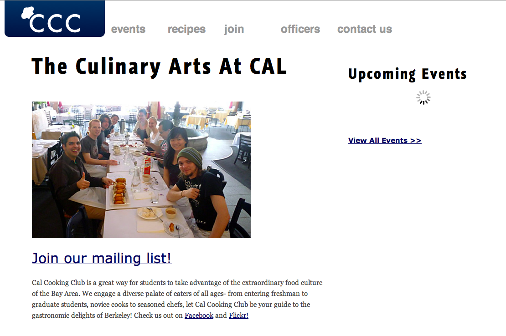

Cal Cooking Club
The Cal Cooking Club is a student run UC Berkeley club that aims to promote cooking among the student body. I completely redesigned their site from scratch, keeping in mind the goal of making the site updateable by the non-technical club officers. I started with static HTML mock-ups so I could quickly iterate on design ideas. Once the officers and I converged on a design I developed a custom Wordpress theme to make it as easy as possible for officers to post news items, events, recipes, and update officer information. View the site at cooking.berkeley.edu.